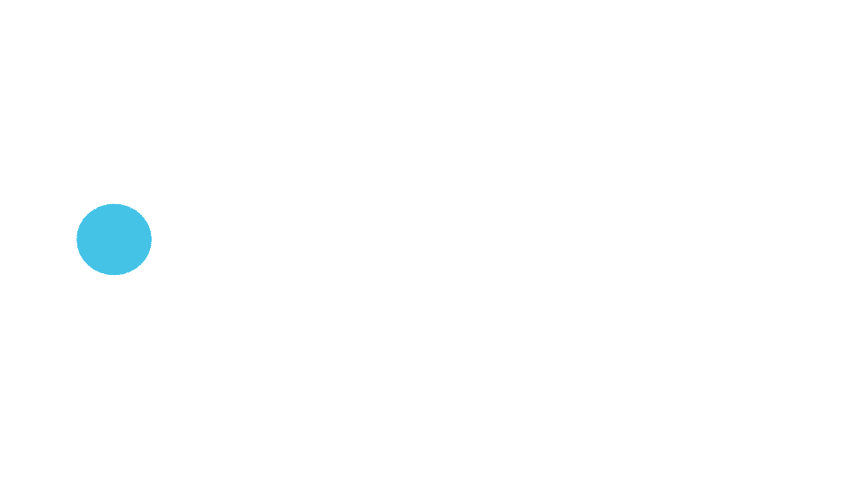

_ _ _____ _____ _ _ ___ _ ___ ______ _____ _____
| | | |_ _/ ___| | | |/ _ \ | | / _ \ | ___ \_ _/ ___|
| | | | | | \ `--.| | | / /_\ \| | / /_\ \| |_/ / | | \ `--.
| | | | | | `--. \ | | | _ || | | _ || / | | `--. \
\ \_/ /_| |_/\__/ / |_| | | | || |____ | | | || |\ \ | | /\__/ /
\___/ \___/\____/ \___/\_| |_/\_____/ \_| |_/\_| \_| \_/ \____/